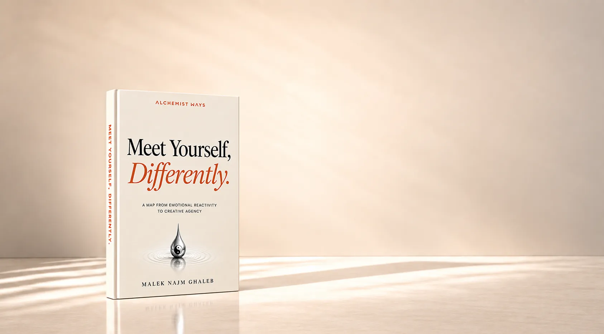
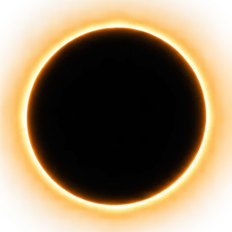
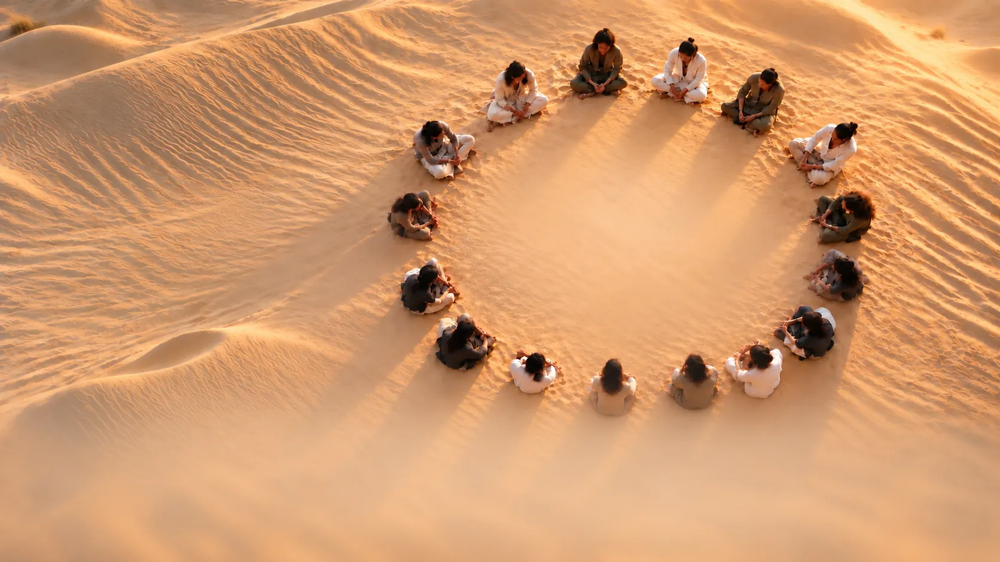
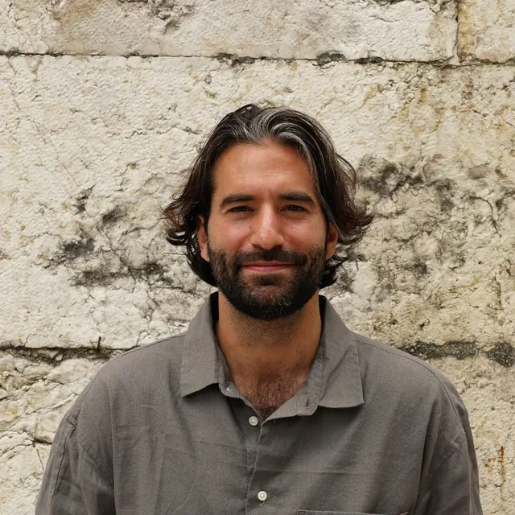

Alchemist Ways. Meet Yourself, Differently. A map from emotional reactivity to creative agency.

From what moves you to what moves through you
Something happensOutside You.Something in you isTriggered.
Something contracts.
Protection moves.
And sometimes, what happens next doesn’t look like protection.

Explode- Implode
- Shut down
It can look and feel like who you are.
To protect what once didn’t feel safe to be.
You learned
to adapt.
These ways of protecting
weren’t random.
As a child, you had needs.
For connection. For safety. For belonging.
And in learning how to meet those needs,
they answered a question:
Given the world I’m experiencing,
what is the safest way to be?
- SuppressHold it in.
Hold back what wants to be expressed.
- ControlManage it.
Try to manage what feels uncertain.
- DefendPush back.
Protect against what feels threatening.
- AvoidMove away.
Move away from what feels difficult to meet.
- AdaptChange for it.
Change yourself to preserve safety or belonging.
What helped you adapt
Can become automatic.
What became automatic
can keep choosing for you.
- Relationships
- Work
- Creativity
- Money
- Expression
- Health
What you move toward.
What you move away from.
What you allow yourself
to become.
And when a pattern has been choosing
for you long enough,
It can feel
like who you are.
But…
what feels like who you are
could become visible as a pattern.
What becomes visible
can be met.
What can be met
becomes more choosable.
As your capacity to stay with what is here grows,
protection no longer has to lead.
The Map
See what’s been
choosing for you.
Free what wants to
move through you.
A Map for meeting
what has been moving you, differently.

- 01REACTIVITYAutomaticThe pattern is happening before you can see it.
- 02AWARENESSVisibleWhat was automatic becomes something you can observe.
- 03INTEGRATIONMetWhat became visible can be met differently.
- 04SOVEREIGNTYChoosableWhat once chose for you no longer has to choose for you.
- 05CREATIVE AGENCYAvailableWhat becomes available when protection no longer has to lead.
What becomesAvailable?
Greater capacity for
Presence
Stay with yourself and your experience, even when life moves around you.
Receiving
Expand your capacity to receive and hold more—including greater wealth.
Authenticity
Express what is true without needing to hide yourself.
Relational security
Remain yourself while being close to another.
Creative freedom
Create what brings you alive without needing external approval.
More of you
Becomes available.

Founder story
Why Alchemist Ways
exists
For years, I thought I was searching for freedom.
Validation. Creativity. Love.
But beneath all of those desires was something quieter
I couldn’t yet see.
I was searching for inner safety.
Much of my life had become organized around looking outside myself—for approval, direction, permission, and confirmation that who I was and what I wanted could be trusted.
Eventually, I stopped trying to escape my anger
and began trying to understand it.
What is this anger trying to communicate?
Following that question led me beneath the anger—
to fear, hurt, protection, old conclusions about myself,
and parts of myself I had left behind.
The Map emerged from that process.
Alchemist Ways grew from learning to meet those parts differently.
Malek Najm Ghaleb
Founder, Alchemist Ways
Read the founder storyBegin Where You Are.
Three ways to meet yourself, differently.
- 01
Discover
Meet what’s here.
A 10-minute Emotional Awareness Tool.
Take one reaction, feeling, or pattern and begin seeing the invisible architecture beneath it.
- 02
Understand
Explore the map.
The complete Map, in book form.
Go deeper into the hidden architecture beneath your patterns—and the movement from reactivity to Creative Agency.
- 03
Transform
Bring it into life.
One-on-one work with Malek.
Bring the Map into lived experience—and work directly with what is ready to become visible, met, and more choosable.
What becomes possible
when more of you
is available to move through?